Koya, Wakayama: things to do, food and stays
Koya · Wakayama
Koya
Highlighted on the Wakayama map.
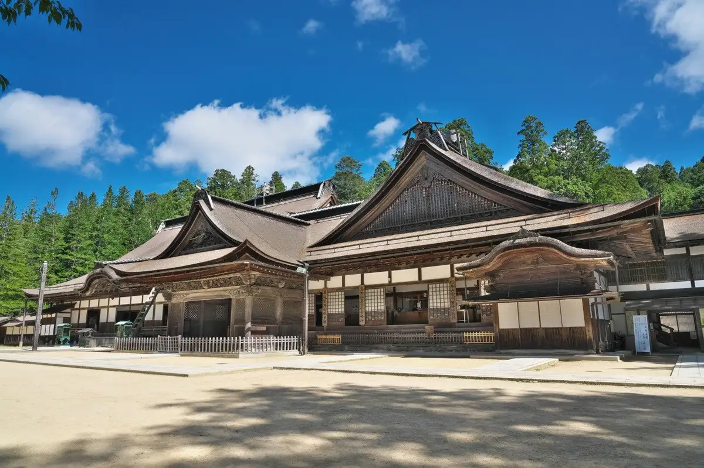
Stay
高野山 別格本山 総持院
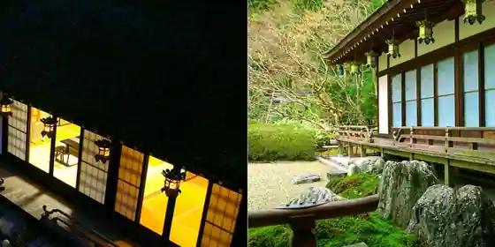
Koyasan Bekkaku Honzan Soji Inn
高野山 宿坊 無量光院
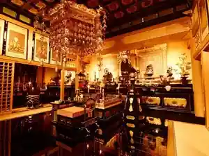
Koyasan Shukubo Muryo Hikari Inn
高野山 宿坊 龍泉院
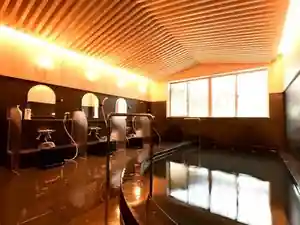
Koyasan Shukubo Ryusen Inn
高野山温泉 福智院
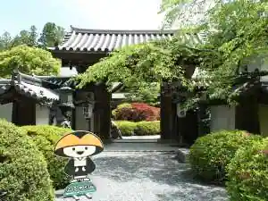
Koyasan Onsen Fukuchi Inn
Inn at Koyasan Onsen in Koyasan, Koya.
一乗院
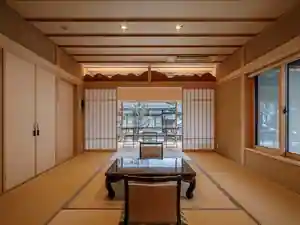
Ichijo Inn
普門院
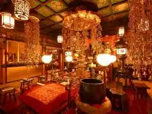
Fumon Inn
宿坊 普賢院
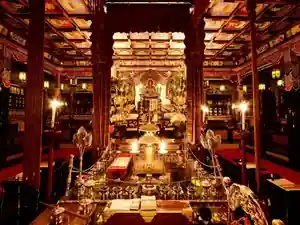
Shukubo Fugen Inn
高野山別格本山 宿坊 大円院
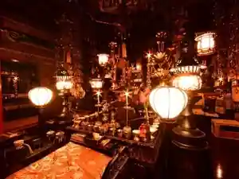
Koyasan Bekkaku Honzan Shukubo Daien Inn
５９６９
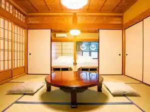
5969
宿坊 西門院
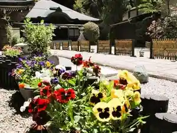
Shukubo Nishikado Inn
Inn in Koyasan, Koya with private baths.
高野山 宿坊 三宝院
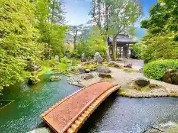
Koyasan Shukubo Sanpo Inn
常喜院
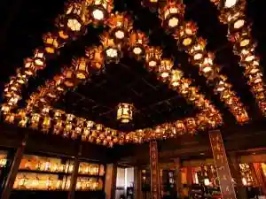
Tsuneki Inn
Dining
御菓子司かさ國
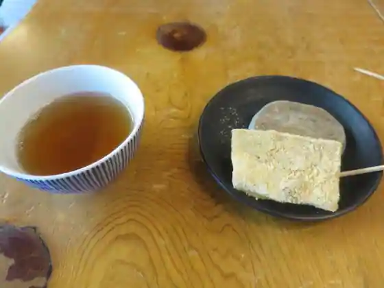
O Kashi Tsukasa Kasa Kuni
胡麻豆腐 濱田屋
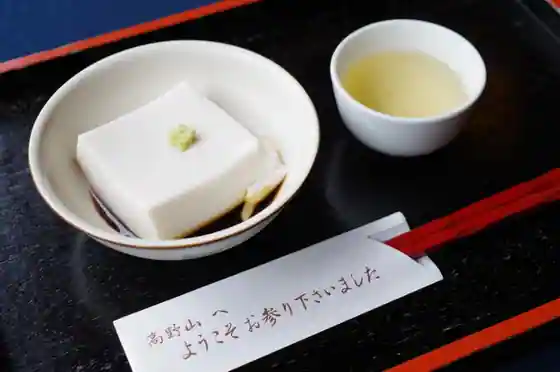
Goma Tofu Hamada Ya
角濱ごまとうふ総本舗 大門店
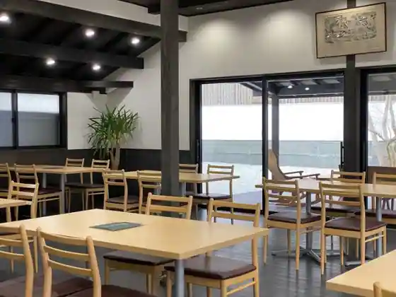
Kadohama Gomatofu So Honpo Daimon
中央食堂・さんぼう
Chuo Shokudo Sanbo
麩善 本店
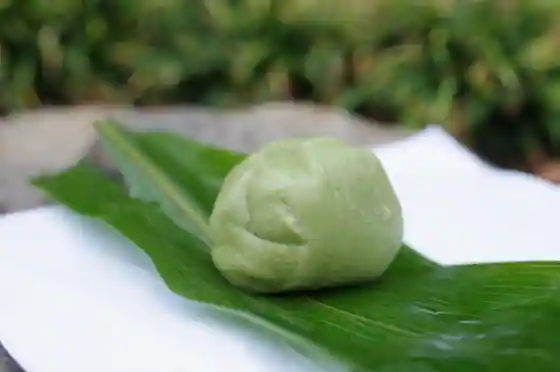
Fu Zen Hon
花菱
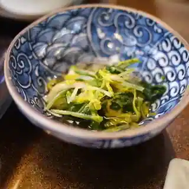
Karyo
つくも食堂
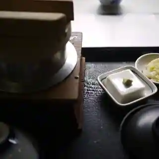
Tsukumo Shokudo
角濱ごまとうふ総本舗 小田原店
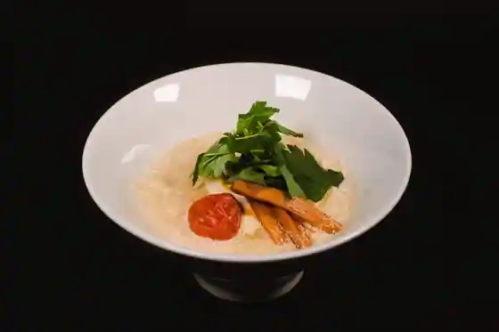
Kadohama Gomatofu So Honpo Odawara
高野山 café雫
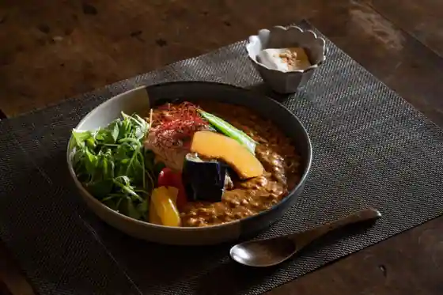
Koyasan caf E Shizuku
天風てらす
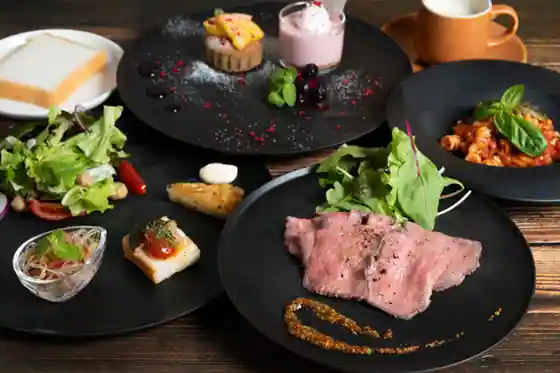
Tenpu Terasu
上きしや 花坂店
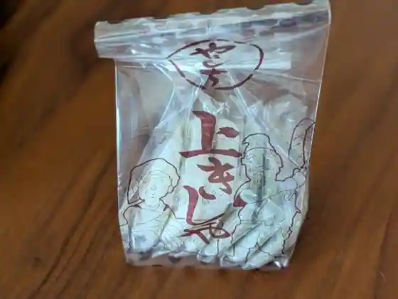
Ue Kishiya Hanasaka
はちよう
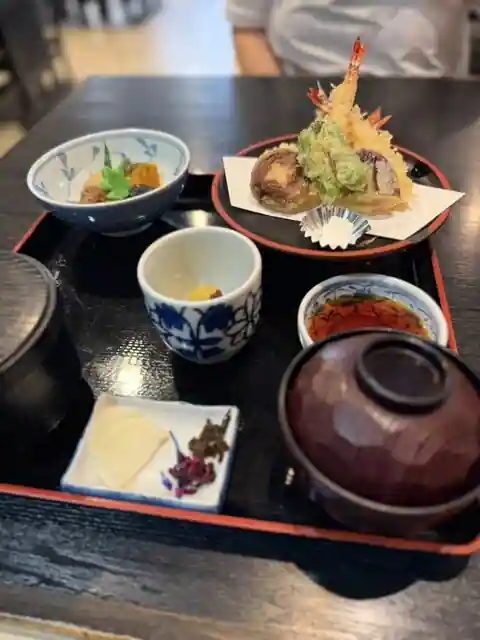
Hachiyo
梵恩舎
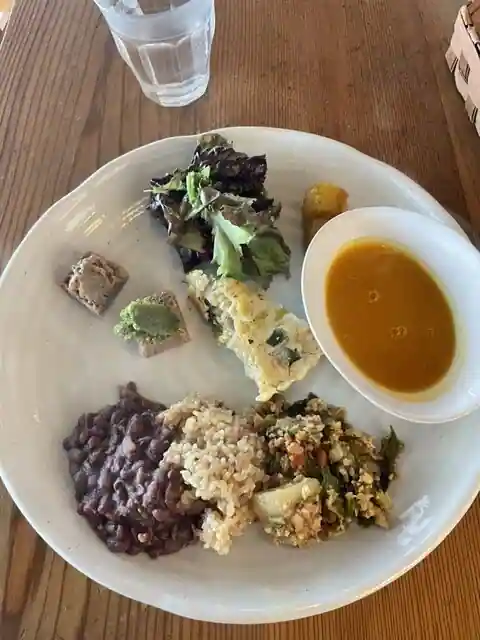
Bon On Sha
光海珈琲
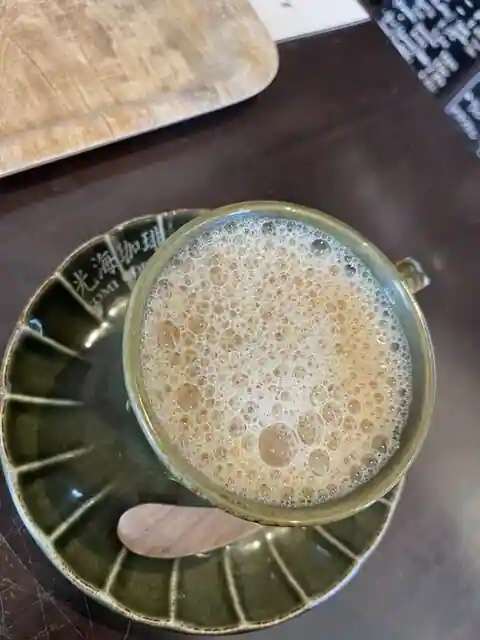
Hikari Umi Coffee
菓匠 松栄堂 本店
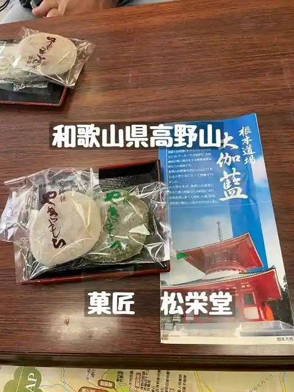
Kasho Shoei Do Hon
和風らーめん みやま
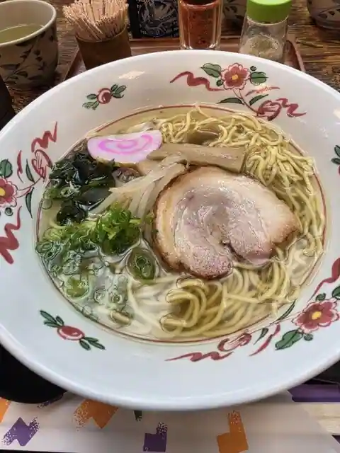
Wafu Ramen Miyama
南峰堂本舗
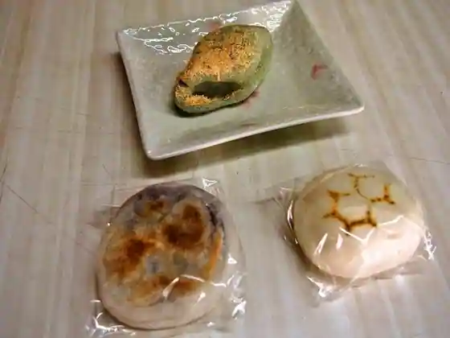
Nanpo Domoto Ho
かさ国 中ノ橋店
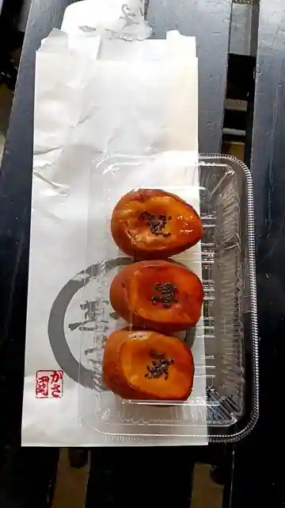
Kasa Kuni Naka No Hashi
恵光院
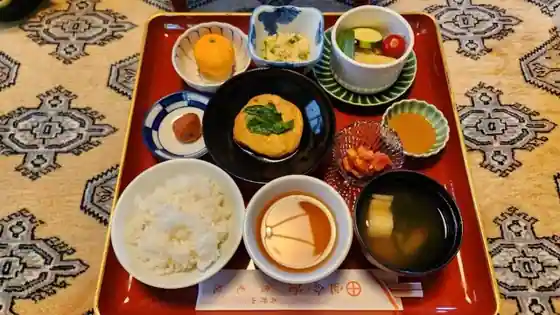
Keiko Inn
ミッチー中華飯店
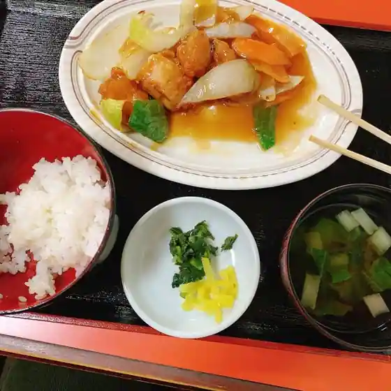
Mitchi Chukahan
上きしや 高野店
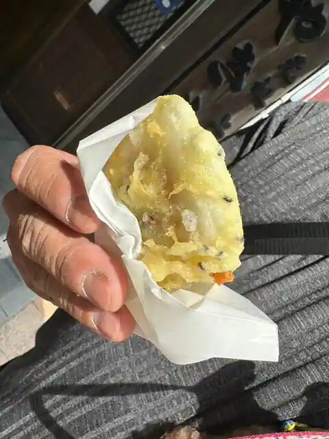
Ue Kishiya Takano
高野山 別格本山 總持院
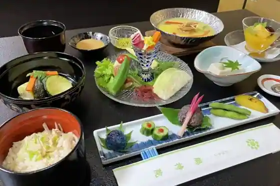
Koyasan Bekkaku Honzan Soji Inn
高野蕎麦ここね 本店
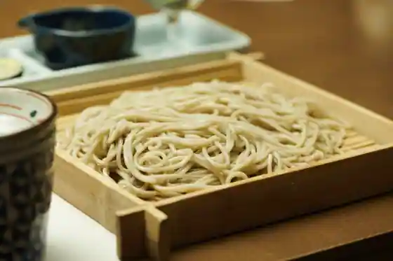
Takano Soba Kokone Hon
Sights
Oku Yuki In
Danjo Garan
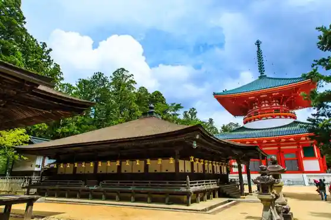
Kongo Mine Tera
Koya Yama Ga Buruka
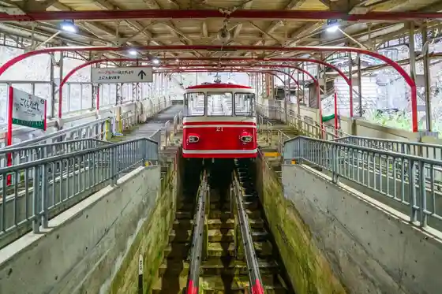
Konpon Oto
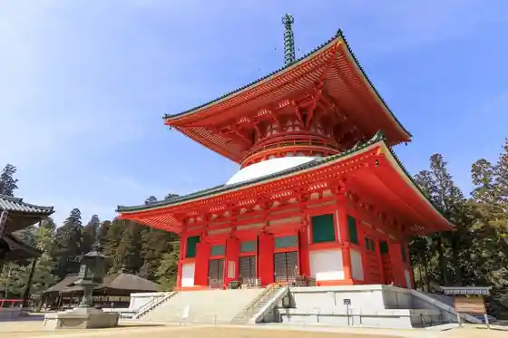
Daimon
Tokugawake Reidai
Koya Sanrei Takara Kan
Kongo Zanmai In
Fudo Sakaguchi Nyonin Do